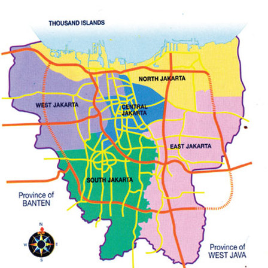

Jakarta's Geopgraphy

Jakarta covers 661.23 km2 (255.30 sq mi), the smallest among any Indonesian provinces. However, its metropolitan area covers 6,392 km2 (2,468 sq mi), which
extends into the two bordering provinces of West Java and Banten. The Greater Jakarta area includes three bordering regencies (Bekasi Regency, Tangerang Regency and Bogor Regency)
and five adjacent cities (Bogor, Depok, Bekasi, Tangerang and South Tangerang).
Jakarta is situated on the northwest coast of Java, at the mouth of the Ciliwung River on Jakarta Bay, an inlet of the Java Sea. It is strategically located near the Sunda Strait.
The northern part of Jakarta is plain land, some areas of which are below sea level, and subject to frequent flooding. The southern parts of the city are hilly. It is one of
only two Asian capital cities located in the southern hemisphere (along with East Timor's Dili). Officially, the area of the Jakarta Special District is 661.23 km2 (255 sq mi) of land
area and 6,977 km2 (2,694 sq mi) of sea area. The Thousand Islands, which are administratively a part of Jakarta, are located in Jakarta Bay, north of the city.